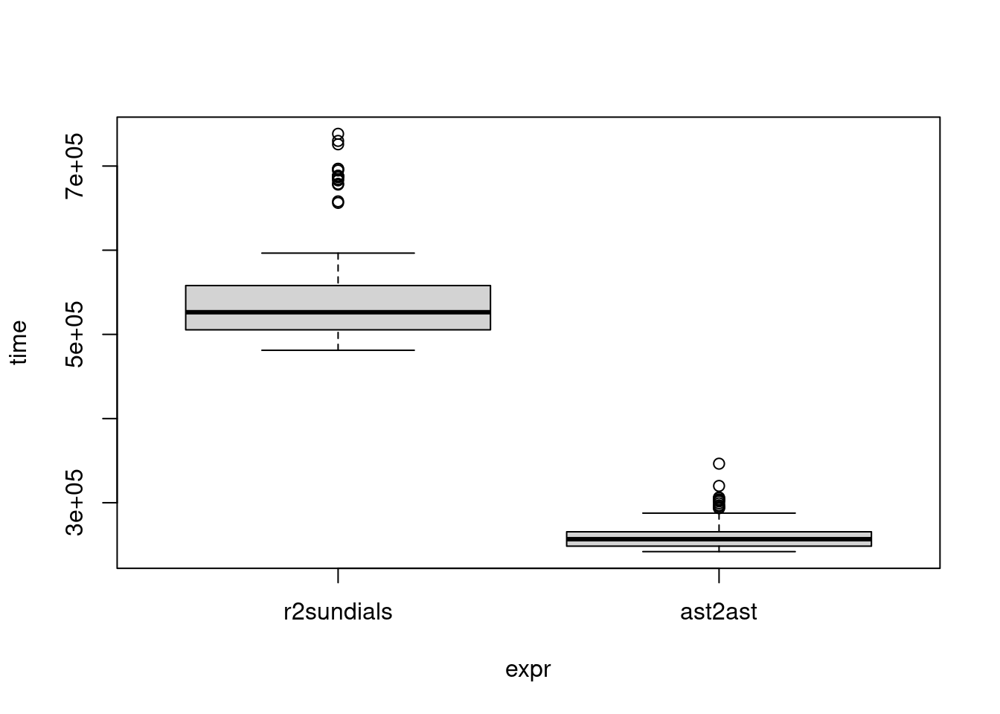

Code
source("translate.R")
ti <- seq(0, 5, length.out = 101)
y0 <- 0
pv <- c(a = 2)
ode <- function(t_db, y_dbs, ydot_dbs, params_dbs, ps_dbs) {
a <- params_dbs[1]
ydot_dbs[1] <- -a*(y_dbs-1)
}
odecpp <- R2cpp(ode)Hello, I’m Konrad Krämer, the author of the ast2ast package. In this tutorial, I will demonstrate how ast2ast can be used in conjunction with r2sundials to solve ordinary differential equations (ODEs).
ast2ast is a package that allows you to define R functions (in this case, an ODE system) in a simple and intuitive way. The key feature of ast2ast is that it translates R code to C++. This is particularly useful when solving ODE systems numerically, as the function needs to be called repeatedly. By translating the R code to C++ beforehand, the process of solving the ODE system becomes much faster. r2sundials is a package that provides an interface to the Sundials suite of numerical solvers, which includes high-performance solvers for ODEs.
Let’s consider a simple ODE system: dy/dt = -a(y-1), where ‘a’ is a parameter. This system has a known solution: y(t) = 1 - exp(-at).
We start by defining the ODE system using ast2ast. Here’s the code:
source("translate.R")
ti <- seq(0, 5, length.out = 101)
y0 <- 0
pv <- c(a = 2)
ode <- function(t_db, y_dbs, ydot_dbs, params_dbs, ps_dbs) {
a <- params_dbs[1]
ydot_dbs[1] <- -a*(y_dbs-1)
}
odecpp <- R2cpp(ode)In this code, we first load the translate.R script, which contains the R2cpp function defined in the same directory as this tutorial. Then we define the time points at which we want to solve the ODE, the initial condition, and the parameter ‘a’. The ODE system is defined in the ode function, which is then translated to C++ code using ast2ast.
Next, we solve the ODE system using r2sundials. Here’s the code:
res_exp <- r2sundials::r2cvodes(y0, ti, odecpp, param = pv)
df <- data.frame(time = attributes(res_exp)$times, y = res_exp[1,])
stopifnot(diff(range(1-exp(-pv["a"]*ti) - res_exp)) < 1.e-6)
plot(df[, 1], df[, 2], type = "l", xlab = "time", ylab = "y(t)")In this code, we call the r2cvodes function from the r2sundials package, passing the initial condition, the time points, the C++ code of the ODE system, and the parameter ‘a’. The result is stored in res_exp. The last line checks that the difference between the known solution and the computed solution is less than a small tolerance, to verify the accuracy of the method.
Finally, let’s compare the performance of the r2sundials method with a pure R implementation.
frhs_exp <- function(t, y, p, psens) -p$a * (y - 1)
p <- list(a = 2)
ti <- seq(0, 5, length.out = 101)
y0 <- 0
res_exp <- r2sundials::r2cvodes(y0, ti, frhs_exp, param = p)
stopifnot(diff(range(1-exp(-p$a*ti) - res_exp)) < 1.e-6)
res <- microbenchmark::microbenchmark(
r2sundials = r2sundials::r2cvodes(y0, ti, frhs_exp, param = p),
ast2ast = r2sundials::r2cvodes(y0, ti, odecpp, param = pv),
times = 100
)
resUnit: microseconds
expr min lq mean median uq max neval cld
r2sundials 468.018 484.168 516.1015 499.8925 513.2930 705.744 100 a
ast2ast 231.394 238.903 259.6057 248.6615 262.5475 403.056 100 bplot(res)
As you can see, even though the function is very small, there is already a gain of approximately a factor of 2 when using ast2ast. This demonstrates the efficiency of ast2ast in translating R code to C++, which can lead to significant performance improvements when solving ODE systems.
In this tutorial, we demonstrated how to define and solve an ODE system using the ast2ast and r2sundials packages. This method is simple, intuitive, and highly efficient, making it a powerful tool for solving ODEs in R. If you are interested in using deSolve I have shown how to use it together with ast2ast here (https://github.com/Konrad1991/ast2ast-examples/tree/main/deSolve). For more information, please refer to the documentation of ast2ast and r2sundials.